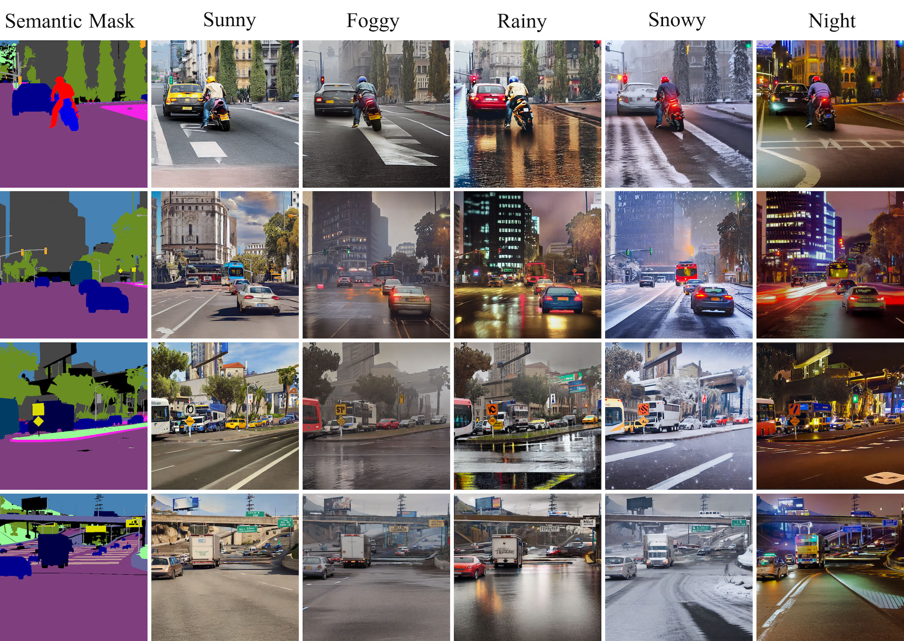

Learning long-term memory representations is a critical yet often neglected aspect of many temporal visual tasks, such as multiple object tracking. However, it remains an open research question how to model and handle, in a principled fashion, long-range dependencies within each tracklet, interaction among tracklets, as well as temporal occlusions. In this paper, we propose SambaMOTR, the first end-to-end tracking-by-propagation approach that addresses all these issues. SambaMOTR propagates track queries using Samba, our novel linear-time set-of-sequences model inspired by Mamba and based on our novel synchronized selective state spaces. Samba autoregressively predicts the future track query for each sequence while maintaining its history in hidden states that are synchronized across tracklets. Additionally, we introduce an effective technique for dealing with uncertain observations and an efficient training recipe to scale SambaMOTR to longer sequences. Our approach enables accurate modeling of long-range dependencies and interactions among tracked objects, while implicitly learning object motion and appearance changes without the need for any hand-crafted occlusion-handling heuristics. SambaMOTR significantly surpasses prior state of the art on the DanceTrack, BFT, and SportsMOT datasets. Our code will be public.
When training on synthetic data, ControlNet learns not only to control but also to steer the generation style toward the synthetic domain. This issue constrains the quality and diversity of the output generation and hinders the usage of the rich generative prior to the full extent. The style drift issue and the way DGInStyle addressed it are exemplified in the figure below.

Stable Diffusion operates in the latent space, and therefore, its effective resolution is limited. We pay special attention to small instances when generating high-resolution images conditioned on high-resolution semantic masks. Such attention helps with the coherency of the generated data and improves downstream applications, such as semantic segmentation. The small instances issue and the way DGInStyle addressed it are exemplified in the figure below.

Refer to the pdf paper for more details on qualitative, quantitative, and ablation studies.
We train multiple state-of-the-art Domain Generalization solutions for semantic segmentation with DGInStyle and obtain superior performance.

Each mask can be used with multiple freeform text prompts to diversify the generated data and enable domain generalization in downstream tasks. This is made possible thanks to the internet-scale generative prior.
Refer to the pdf paper for more details on qualitative, quantitative, and ablation studies.
@article{segu2024samba,
author = {Mattia Segu, Luigi Piccinelli, Siyuan Li, Yung-Hsu Yang, Bernt Schiele, Luc Van Gool},
title = {Samba: Synchronized Set-of-Sequences Modeling for End-to-end Multiple Object Tracking},
year = {2024},
eprint = {2406.03048},
archivePrefix = {arXiv},
primaryClass = {cs.CV}
}